[ Sigmah version 2.0 ]
1. General presentation
1.1 The Sigmah project
1.1.1 History of the Sigmah project
1.1.2 The future of the Sigmah project
1.2 Sigmah, the software
1.2.1 What is Sigmah?
1.2.2 Who is Sigmah for?
2 Learning to use Sigmah
2.1 Navigating in the application
2.1.1 Tabs display
2.1.2 How to close a window
2.1.3 Framed double arrows: collapse/expand
2.1.4 Framed arrows: expand/collapse
2.1.5 Personnalising tables
2.1.6 Non-framed chevrons: other buttons
2.2 Main icons
2.3 Colour codes
3 Definitions
3.1 Projects
3.1.1 NGO projects
3.1.2 Funding projects
3.1.3 Local partner projects
3.2 Organisational units (i.e. Mission, Base, Desk, etc.)
3.4 Models
3.5 Document
3.6 Indicator
3.6.1 Types of indicator
3.6.2 « Indicator group»
3.6.3 « Indicator collection site»
3.6.4 Source of indicator data
3.7 Category
3.8 The "Project core" and "Project core" versions
3.9 The offline mode, offline bases and bookmarked projects
4 User screens
4.1 Dashboard
4.1.1 Reminder lists
4.1.2 Menu
4.1.3 Organizational units table
4.1.4 Projects table
4.2 Organizational unit
4.2.1 Overview
4.2.2 Information
4.2.3 Calendar
4.2.4 Reports & documents
4.3 Project
4.3.1 Management Board
4.3.1.1 Reminders table
4.3.1.2 The Phases Table
4.3.1.3 The "Related projects" table
4.3.2 Details
4.3.3 Logical framework
4.3.4 Manage indicators
4.3.5 Map
4.3.6 Calendar
4.3.7 Indicator Data Entry
4.3.8 Reports and documents
4.3.8.1 Writing a report
4.3.8.2 Attaching a document
5 How do you… ?
5.1 How do you create or remove a project?
5.1.1 How do you create a project on the Dashboard?
5.1.2 How do you create a project on a Project page?
5.2 How do you change phase?
5.3 How do you make a Project core version?
5.3.1 Locking – Unlocking a version
5.3.2 Validating or rejecting a version
5.3.3 How do you compare project versions?
5.3.4 How do you rename a Project core version?
5.3.3 How do you show an old Project core version?
5.4 How do you copy and paste a logical framework?
5.5 How do you attach a document?
5.6 How do you attach a new version of a document?
5.7 How do you create an “indicator”?
5.8 How do you create an indicator data collection site?
5.9 How do you export data to your computer?
5.10 How do you change your password?
5.11 What can you do if there is an insufficient internet connection?
5.11.1 How do you prepare your offline environment?
5.11.2 How do you synchronise data after you have worked offline?
5.11.3 How do you destroy your offline environment?
5.12 How do you import data?
5.13 What can you do... if you have a problem??
6 Administration
6.1 Concepts for the administrator
6.1.1 “User”, “Profile” and “Privacy group”
6.1.2 Project model section
6.1.2.1 Definitions of model field types
6.2 Managing users and rights
6.2.1 How do you add a user?
6.2.2 How do you disable (or enable) a user account?
6.2.3 How do you search for a user?
6.2.4 How do you edit a user account?
6.2.5 How do you add a profile?
6.2.6 How do you edit a profile?
6.2.7 How do you create a privacy group?
6.2.8 How do you edit a privacy group?
6.3 Managing organisational units
6.4 Managing project models
6.4.1 How do you create a project model?
6.4.2 How do you edit a project model which has just been created?
6.4.2.1 Upper section
6.4.2.2 Lower section
6.4.2.2.1 "All fields" Tab
6.4.2.2.2 "Phases" Tab
6.4.2.2.3 "Log frame" Tab
6.4.2.2.4 "Importation framework" Tab
6.4.3. How do you modify an available and used project model?
6.4.4. How do you import a project model?
6.4.5. How do you delete a project model?
6.4.6. How do you export a project model?
6.4.7. How do you duplicate a project model?
6.5 Managing organizational unit models
6.5.1 How do you create an organizational unit model?
6.6 Managing report models
6.6.1 How do you create a new report model?
6.6.2 How do you create a new report section?
6.6.3 How do you delete a report model?
6.7 Managing Categories
6.8 Managing Importation Frameworks
6.9 Settings
The aim of this guide is to present the main functionalities of Sigmah open source software to help users to use the software and get the most out of it. It has been written with two kinds of reader in mind:
The guide is available in paper format (PDF document), in the form of
contextual help within the software itself, and on the website www.sigmah.org,
in the form of a wiki. If you come across an error or feel that
something is missing, please go to sigmah.org to make the necessary
corrections in the guide’s wiki pages. In doing so, you will be
contributing to the collaborative approach which has been behind the
development of the software from the beginning.
The objective of the Sigmah project is to contribute to improving the
service delivered to people in crisis situations by building the
management capacity of aid organisations (NGOs).
In order to do this, project management software has been developed
which allows humanitarian actors to centralise information and
anticipate collective activities.
Sigmah is the product of numerous forces which have been brought together:
• The project began in response to a collective
request on the part of a group of French NGOs. During 2009, the needs of
this group in terms of information management were evaluated: this
showed that there was a shared need to improve certain priority
functionalities.
• ActivityInfo, open source software for monitoring
indicators, which was developed for UNICEF and its NGO partners in
Congo, was integrated into the project and bedatadriven (www.bedatadriven.com), its designer, has been involved in the development of Sigmah.
• The system also follows on from the Dynamic COMPAS,
free and open source software for managing the quality of humanitarian
projects, developed by Groupe URD (www.urd.org), who also conducted the initial needs assessment.
The project is steered by a group of humanitarian organisations who form a “Steering Cooperative”.
For more information about the history of the project go to: www.sigmah.org
Sigmah can be freely modified or adapted, the changes made to it being available to all. This continuous, evolving process, based on feedback from users and technical support from developers, ensures the long-term viability and relevance of the project.
There are many ways in which you can contribute to the project: you can tell us what you think about the software, keep up to date with the latest developments, test it, help to translate it, add to or correct this guide, provide us with funding or even join the group of developers! For more information, go to "Contribute to Sigmah".
Sigmah is free and open source software to help aid organisations manage operational information.
The aim of Sigmah is to improve information management for humanitarian
projects by meeting the following needs with a single IT tool:
Monitoring projects and funding: Sigmah's homepage is a dashboard which gives an overview of progress on projects and funding.
Sharing documents: All key project and organisation documents can be easily shared in Sigmah, so it serves as an information sharing base.
Managing the project cycle: Sigmah allows organisations to parameterise their own specific project cycles, and ensure that all stages of validation for each phase and good methodological practices are respected for each project that is monitored. These project cycles can be easily modified by the organisation, notably in response to feedback from staff.
Managing the logical framework: The objectives, results and activities of international aid projects are very frequently organised in the form of a logical framework. Logical frameworks can be entered and monitored in Sigmah.
Monitoring indicators: Whether connected to a logical framework or not, it is possible to create and monitor the evoluation of all the indicators required for each project.
A calendar and reminders for each project: Meetings, tasks and events linked to each project can be monitored in the calendar using reminders.
An offline mode: The offline mode allows users to continue working with Sigmah even when they do not have an internet connection. They can then share their work with their colleagues by synchronising as soon as an internet connection is available again.
Sigmah is flexible software which can be parameterised, which means it can be adapted to each organisation depending on its needs and constraints. Rather than a standard format for the software, there is a variety of different possible formats. It is the Sigmah administrators (who have particular access rights) who are in charge of the parameterisation of the software.
Sigmah has been developed under an open source licence which means it can be shared and can evolve to the benefit of the humanitarian community as a whole.
N. B. We recommend that organisations go through a general institutional adoption process in order to use Sigmah. For more information about this kind of adoption, consult the Sigmah website (www.sigmah.org).
Sigmah is principally for aid organisations who implement complex
humanitarian projects (a number of teams in charge of several
projects/programmes in a variety of technical sectors and in different
organisational units ).
An individual user can use Sigmah to their advantage for a personal
project, including small-scale projects, but will not be able to use the
software to its full potential.
N.B. In all cases, Sigmah requires solid understanding of
project cycle management and, in order to be put to optimal use, basic
notions of the principles of quality assurance (Quality COMPAS
method or some other quality reference framework).
Finally, using the Sigmah software does not replace the expertise
of the people involved in the projects/programmes. Nor does it do away
with the need to use technical tools which are specific to each sector
of intervention (food security, water and sanitation, etc.) and each
type of job (accounting, security, intranet, e-mails…)
For optimal comfort of use, we suggest you use the application in full screen mode: with Mozilla Firefox, the full screen mode can be switched on and off using the F11 key.
A tabs system means that you can open several pages simultaneously on the same internet navigator window. These are situated just below the logo and the name of the organisation: they are added to the right of the initial tab on the Dashboard and cannot be switched around. The order in which they are presented is therefore the order in which the pages were opened.

If a very large number of pages are opened, the tabs automatically move
to the left, covering the first tabs which were opened. It is also
possible to go through the tabs manually by clicking on one of the two
triangles on the far right hand side of the tabs bar:
- The triangle pointing to the right to run through the tabs towards the right,
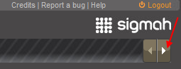
- The triangle pointing to the left to run through the tabs towards the left,

Apart from the Dashboard, each new page opened has a tab with a cross on it. Click on this cross to close the page:
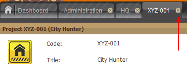
The only way to close the Dashboard is to close the session by clicking on “Logout” in the top right hand corner of the screen:

The framed double arrow situated in the top right hand corner of the
title bar of certain sections (e.g. Reminders, Related projects, Filter,
Size) is used to collapse or expand their content in order to leave
more or less space to the other sections of the page.
There are four types of double arrow, each with its specific function:

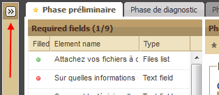


Having opened a project, you arrive on the project’s “Management board” page. The main part of this page is taken up with Project phases. The “Phase details” section is organised in what are known as “groups” which can be expanded and collapsed by clicking on framed arrows. Click on an up arrow to collapse the group so that it is hidden from view.

Click on a down arrow to expand the group so that it is visible again.

Column content can be reorganised in all Sigmah tables. To do this, move the cursor over the right hand side of the column title. A triangle pointing downwards will appear. Click on the triangle. This opens a drop-down list which includes the three following options:
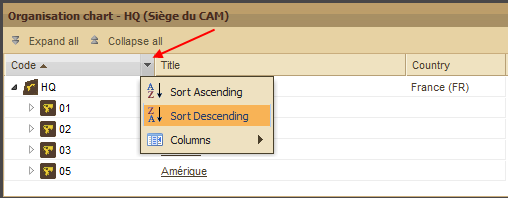
When pages are opened, they are sorted in ascending order by default.
N.B.: A fourth option ("Filter") is available for the following columns (Code, Title, Active phase and Organisational Unit). See below.
Sort Ascending and Sort Descending
“Sort Ascending” and “Sort Descending” work for letters but also for numbers (0 to infinity):

Place your cursor on Columns and another drop-down list will appear
with options to be selected or deselected by ticking or unticking the
boxes. These are the column headings available for the table that is
being used:
- a heading preceded by a box which is ticked means that the column is displayed,
- a heading preceded by a box which is not ticked means that the column is hidden.

You can tick or untick a heading by simply clicking on the corresponding box:

It is also possible to increase or reduce the width of columns by placing the cursor over the right hand edge of each column heading. A symbol appears which consists of two arrows (one pointing left and the other pointing right) separated by two vertical lines. You can increase or reduce the width of the column by dragging the edge to the left or right.
For Code, Title, Active phase and Organisational Unit columns
For these 4 columns, when you place the cursor over the "Filters" title, a new field appears to be filled in with the letters/words of your choice (by default, the words 'enter text" appear in this field, and disappear when you place your cursor in the field).

The Filter function will automatically apply.

For the Budget columns (spent, recieved and planned)
By placing the cursor over "Filters", new numerical fields appear to be filled in preceded by mathematical symbols

For the “Time” column
This column has a filter for closed projects. The box is ticked by default, which excludes all closed projects from the dashboard. By placing the cursor over this Filter you will see a new drop-down list which gives you the following choice:

For the “Category” column
Place your cursor over "Filters" and a new drop-down list opens with tick boxes. This list includes all the category labels available in your parameterisation of Sigmah in the form: label title (name of label category).
These tickboxes allow you to filter projects as follows:

You can tick or untick a heading by simply clicking on the corresponding box:

In order to unclick all the selected labels at once, untick the box located at the left of “Filters” field.
If your computer screen is small or if you reduce the screen space
occupied by Sigmah (for example, by clicking on this symbol  on your web browser) there may not be enough space to display all the
buttons on the tool bar. If this is the case, this symbol
on your web browser) there may not be enough space to display all the
buttons on the tool bar. If this is the case, this symbol  will appear on the right hand side of the bar to allow you to continue
to gain access to all the buttons which cannot be displayed.
will appear on the right hand side of the bar to allow you to continue
to gain access to all the buttons which cannot be displayed.

When you click on the symbol, the buttons which have disappeared from the screen due to lack of space are shown. For the example above, this gives:

Instead of:

 |
Field which belongs to the Project core (See 3.8. The "Project core" and "Project core" versions) |
|
|
History of modifications made to a field |
 / / |
Internet connection available/ not available |
 / /  |
Online mode / offline mode (Voir 3.9. Offline mode, offline bases and bookmarked projects) |
 Organisational unit
Organisational unit
 NGO project
NGO project
 Funding project
Funding project
 Local partner project
Local partner project
NB: For more information about different types of project as they are defined in Sigmah, go to « "Projects" ».
For more information about what Sigmah defines as « Organisational unit », go to « "Organisational unit" ».
Project monitoring colour code
This allows users to quickly classify, distinguish and visualise the progress that is being made on a project in three areas: budget, time and activities.
Reminders colour code
There is also a colour code for the reminders situated on the left of the Dashboard and Project Management Boards. The reminder icon can be in three different colours which have the following meanings:
To do:
 Done
Done To do
To do Late
LatePending:
 Done
Done Pending
Pending Late
LateIn Sigmah, a project is an entity which includes at least:
Depending on the specific characteristics of the model used, the
project can also contain a lot of other information: anything the
organisation decides is useful to monitor.
In practice, humanitarian actors use the word « project » without
making a clear distinction between their own perception of the project,
the perception of the donor and the perception that an implementing
partner can have of it. In order to be more precise, for example, for
cases involving co-funding, it was necessary to establish distinct
concepts.
There are therefore three types of project in Sigmah:
Over and above their differences, the definition of a project given above applies to all three types.
An “NGO project” can either be a project which an organisation devises
and implements independently or any project which does not fall clearly
into either the “Funding project” or the “Local partner project”
categories.
An NGO project is characterised by the organisation’s own vision and
way of managing information. For example, it is used to manage
internal reports, the decision-making process involved in launching a
project, the indicators which the organisation wants to monitor
independently, etc.
NB : NGO project icon
(See "Main icons" for more details)
“Funding” refers to the financial resources involved in one or more
projects. Most projects are funded by a donor and, in most cases, donors
refer to the funding as the project. A Funding project can include the
different phases involved in funding, from the initial intention to
project closure by way of the contract phase proper. And certain
funding models can have no phases when it is not necessary to monitor
the progress of a request and the state of accountability towards the
donor.
Funding can be provided by one or more donors. When funds and funding
requests, monitoring and communication function in a single and
undispersed way, co-funding involving several donors will be considered
to be a single funding project , with several associated donors. If
financial reports, deadlines or amounts of money need to be
independently managed by different donors, co-funding will be managed
with several funding projects .
Like projects, funding can be amended.
NB : Funding project icon
(See "Main icons" for more details)
Local partner projects are those which are managed by implementing partners (generally a local partner of the organisation).
NB : Local partner project
(See "Main icons" for more details)
An organisational unit is a branch of an organisation in an operational
field. Humanitarian organisations generally have more than one
organisational unit. These organisational units correspond to the
organisation’s different hierarchical levels in a crisis zone.
Traditional organisational units are HQ, Desk, Mission, Base, etc. For
example, there may be an Asia Desk, a Pakistan Mission, a Bukavu Base,
etc.
Sigmah therefore defines an organisational unit as the geographical
area (continent, country, region) within which a project is carried out.
Organisational units therefore make up a tree structure with the
heaquarters as the trunk.
NB : Organisational unit icon
(See "Main icons" for more details)
In Sigmah, a report can take any form: its structure – the model – is
decided by the organisation. Each model can be modified in the
Administration section of the software.
Reports can be added to and/or consulted in the “Management board” and “Reports and documents” sub-tabs.
(See "Management of Report models" for more details)
In order to be as flexible as possible, Sigmah uses the concept of Models with regard to:
NB: Every project which is created is associated with an organisational unit as shown in the diagram below:

In concrete terms, a project model allows you to create as many projects as you want which all require the same information, all have the same format of logical framework, the same number of phases, etc.
In Sigmah, a document is an attached file. It is possible to attach several versions of the same document successively while conserving their chronology.
(For more details, go to "How do you attach a document?" et "How do you attach a new version of a document ?")
In Sigmah, an indicator is a variable whose value is measured over time in a number of sites. For each project, users can create their own indicators and can choose whether or not to link them to the logical framework.
Sigmah allows 2 types of indicator to be collected:
1. Quantitative indicators:
These indicators are measured in numerical terms (e.g. “the number of NFI kits distributed”)
2. Qualitative indicators:
These indicators are measured in terms which are defined when the indicator is created (e.g. “General perception of the project by the beneficiaries”, with a possible list of measurements being, Very good, Good, Poor, Very poor)
(Go to "How do you create a new indicator?" for more details)
Indicators can be organised into “Indicator groups”.
Indicator groups function in a similar way to folders for files:
Indicator groups can have the same names and structure as the elements
of the logical framework, but the indicator groups are not themselves
elements of the logical framework. Users can modify groups and create
new groups at any time, even if certain groups have automatically taken
the names of elements of the logical framework.
Groups of indicators can be manipulated on the "Manage indicators" screen and are also visible on the "Indicator Data Entry" screen.
Indicator values are collected on “indicator collection sites”.
For each project, one or more indicator collection sites can be defined. An indicator cannot have a value without a site.
A site is a geographical point to which a temporal series of indicator
values are associated. This can be a distribution site, a health centre,
a well, or more abstractly, a base or a capital or an indicator related
to the context.
A site has:
All projects have a main site. This is the first site to be defined in the Map sub-tab, and it corresponds to the location of the project. ( See 5.3.5 Map )
An indicator can have data which comes from several sources:
Example
For example, for a well construction programme which is co-funded by
ECHO and UNICEF, the reporting may be different for each donor. The
total number of wells may need to be monitored for ECHO, whereas UNICEF
may only be interested in the wells that it has funded directly. 3
projects would be used to monitor this project in Sigmah: one In-house
project (IP) and 2 Sources of Funding projects related to the
source of funding - one ECHO project (EP) and one UNICEF project (UP).
If, for example, the two donors ask for the average monthly flow rate of
wells, the following indicators could be used:
| Project | Indicator | Sources of data |
| In-house project IP | flow rate-u, “average flow rate UNICEF”, monitors all the wells directly funded by UNICEF | Specific field collection |
| In-house project IP | flow rate-a, “average flow rate others”, monitors all the other wells | Specific field collection |
| UNICEF Project UP | flow-rate, « Wells’ average rate of flow » | NP.flow rate-u (flow rate-u indicator from the In-house project IP) |
| ECHO Project EP | flow rate, “average flow rate of wells” |
|
Categories are based on specific characteristics which define projects on the basis of certain criteria which have been chosen. Different types of category are possible. These are defined when the parameters are established through "labels" with a choice of 6 different icons and 40 different colours available.
Example of categories used to distinguish types of crises:

(Go to "Managing Categories" for more details)
International aid projects need to be able to evolve and adapt to
changes in the context. It is sometimes necessary to revise and monitor
changes in certain fundamental characteristics of the project, such as
its end date, its budget or its objectives or expected results. In
Sigmah, these characteristics are grouped together in the concept of the
Project core, which is represented by the following icon: .
The Project core can be locked in order to make sure that the basic characteristics of the project are not changed for a period.
"Project core" versions make it possible to monitor and save all the modifications made to the Project core.
More concretely, the Project core is made up of the following elements in Sigmah:
The offline mode allows users to continue to work on Sigmah even when there is no internet connection available. They can then share their work with their collaborators by synchronising as soon as an internet connection becomes available again.
In "offline mode", most of Sigmah can be used: you can consult the last version of downloaded information, modify information, attach files, etc. The only things which are not accessible are: modifying reports, creating projects and administrative tasks - to create a new user or modify the parameters of Sigmah, it is necessary to be connected to the internet.
What the offline mode looks like
There are two icons related to the "offline" mode:
|
/ |
Internet connection available / not available |
|
/ |
Sigmah in online mode / offline mode |
The offline mode begins automatically if the internet connection is lost.
In offline mode, the top left-hand part of the Sigmah screen loses its orange background, and the "online mode" icon changes to "offline mode" in the top right-hand corner.

The offline environment
In offline mode, users can continue to work thanks to two offline bases:
Thanks to these 2 offline bases, when users lose their internet connection they can gain access to their offline environment, which is made up of:
These projects and organisational units are available in the last version that the user downloaded vefore losing the connection, either by visiting the page or by manually refreshing their offline data and file bases.
The “Dashboard” is Sigmah’s home page. As such it will always stay open
during a session, it being the first tab (located on the left) no
matter how many pages are subsequently opened. The only way to close the
Dashboard is to close the session by clicking on “Logout” in the top
right hand corner of the screen.
The Dashboard is divided into 5 blocks:
- “To do” reminders list
- “Pending” reminders list
- Menu
- Organisational units table
- Projects table
N.B.: By clicking on an organisational unit or a project, you open a new screen. The new screen’s tab will then be displayed to the right of the Dashboard tab.
The “To do” and “Pending” tables show all the tasks created during projects.
These can be sorted alphabetically in ascending or descending order (by
clicking on the column heading “Label ”) or by date (by simply clicking
on the column heading “Expected date”).
To create a new task, go to "Reminder table" for more details.
For more details about the reminder colour codes, go to "Reminder colour codes".
For more information about the “New project” button, go to "How do you create a project on the Dashboard?".
For more information about the "Test" project button, go to "Test Projects"
For more information about the “Administration” button, go to "Administration".
For more information about the "Import" button, go to "How do you import data?"
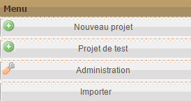
The Organisational units table is located at the top of the Dashboard and gives access to all the units which are visible for a user.
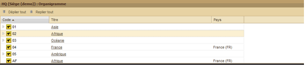
In default position, the Organisational units table opens with folders closed, which means without displaying sub-folders.
Opening/closing a folder which contains sub-folders
When a folder contains one or more sub-folders its icon is preceded by a
grey-outlined triangle. Click on the triangle to open the folder and
show the sub-folders that it contains.

When the folder is open, the triangle becomes black and points
downwards. To hide the sub-folders, click on the triangle again and it
will be replaced once again by a grey-outlined triangle.
If a sub-folder is preceded by a grey-outlined triangle, this means
that it also contains sub-folders. Follow the same procedure to open and
close these.
If an organisational unit icon is not preceded by a triangle, this means that the zone does not contain any sub-folders.
Expanding/collapsing all the organisational units
To save time, it is possible to open all the folders and sub-folders
contained in the organisational units table at the same time. To do
this, click on the “Expand all” button located below the table heading:

This displays all the folders and sub-folders which exist:

To collapse all the folders and sub-folders, click on the “Collapse all” button located just to the right of “Expand all”.
Sorting organisational units
For more information, go to "Sort organisational units".
The Projects table (which is identical to the one shown in the lower section of Organisational unit pages) has 8 columns by default:
The first four columns (Code, Title, Active Phase and Organizational
unit) contain written content, the following three columns (Spent
budget, Time and Activity) contain diagrams and the last column
(Category) contains icons.
Updating the information contained in the Projects table
All the additions and modifications which you or other users make in
real time in different projects and organisational units are not
constantly and automatically recorded in the Dashboard and its different
sections, such as the Projects table.
In order to have the most updated version of the information recorded
since the last time the Dashboard was used, click on the “Reload
project” button located below the table heading.

While the table is being updated a loading bar is displayed:

N.B.: The Projects table in the Overview page of Organisational
units does not have a “Reload project” button. There are two options to
update this table:
- Close and then reopen the page
- Press the F5 key on your keyboard.
Grouping projects by type
By default, projects are listed by “NGO project” with Funding projects and Local partner projects grouped in relation to these.

If you select Funding project, this re-organises the list of projects
so that they are listed by Funding project with NGO projects and Local
partner projects grouped in relation to these.

If you select Local partner project, NGO projects and Funding projects are then grouped in relation to these.

Display/Hide related projects
It is possible to close each project’s related projects by clicking on
the black triangle pointing down to the right in the Code column:
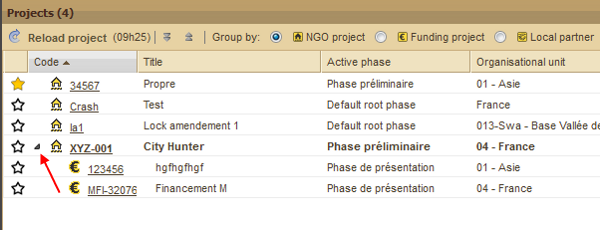
The black triangle is replaced by a grey-outlined horizontal triangle.

Expanding/collapsing all the projects
To save time, it is possible to open all the projects (of the type
selected) contained in the table of projects. To do this, click on the
“Expand all” button located under the table heading, to the right of the
“Reload project” button.

All the projects related to those you have chosen to appear by default are now displayed:
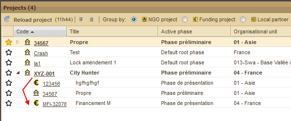
To collapse all the related projects and leave visible only the
projects which you have chosen to display by default, click on the
“Collapse all” button located to the right of the “Expand all” button.
Bookmarking a project
In the Projects table, the first column on the left allows you to
bookmark a particular project. To do this, click on the star which is
grey by default.

The star will become yellow and a confirmation message appears in the bottom right hand corner of the screen.
 A
bookmarked project will automatically be part of your offline data base
when you use the offline mode. For more information, see Offline mode, offline bases and bookmarked projects
A
bookmarked project will automatically be part of your offline data base
when you use the offline mode. For more information, see Offline mode, offline bases and bookmarked projects
Organizational unit pages are accessed by clicking on the titles in the Organizational units table.
At the top of each Organizational unit page is the Code and the Title
of the unit and possibly other information decided when the parameters
are established.

Organizational units have four related pages:
These are accessed by clicking on the sub-tabs below the title bar:

The Overview page includes two tables:
For more information about the Projects table go to "Projects table" in the Dashboard section.
Sorting organizational units
When you place your cursor on the right hand side of a column heading, a
triangle appears. Click on the triangle to open a drop-down list with
the following three options: Sort Ascending, Sort Descending and
Columns.

Sort Ascending and Sort Descending reorganises the column content both alphabetically and in terms of numbers (0 to infinity).
If you place your cursor over « Columns », a new drop-down list opens
with boxes to select and de-select. These are the column headings
available for the table: if the box is ticked the corresponding heading
is displayed and if it is not ticked the heading is hidden. Select and
de-select headings by clicking on the corresponding boxes.

N. B.: These two tables are the same as the tables on the Dashboard.
The information page brings together all the information for the related organizational unit model. It always includes lines for the code and the title and space for all the other fundamental characteristics of the organizational unit.
The Calendar page is divided into two parts:
1. On the left is the list of types of entry. It is possible to hide certain types of entry to increase the space available for the others by deselecting them. It is also possible to hide the list of types of entry to increase the size of the right hand section (see "Framed double arrows: collapse/expand" for more details) and sort the types of entry in ascending or descending alphabetical order by clicking on the triangle on the right hand side of the Name line.

2. On the right is the Calendar, which can be presented in three different ways:
The default format of the calendar is the current month. The date of
each day is written in dark grey. The weeks of the year are numbered to
the left of each line in orange.
The Previous and Next buttons allow you to go to the previous or the following month or week depending on the selected format.
It is also possible to add an event by clicking on the “Add Event” tab.

This opens the following dialog box:

Fill in the different lines then click on OK. The event then appears in the Calendar.
N. B.: To select a whole day for an activity or an event, do not specify a start hour or end hour.
Go to "Reports & documents" in the Project section.
The Management board has three sections:
1. The “Reminders” table
2. The “Phases” table
3. The “Related projects” table (not to be confused with the Dashboard or Overview Project tables)
This table has two sections: activities ‘To do ’ and activities ‘Pending’. Both of these include the following 4 columns by default:
In both sections you can also:


Choose one of the options to display only the tasks with this status.
These tables use a colour code: black is the basic colour while red signals a task that is behind schedule.
The Phases table includes elements which are decided during the parameterisation. For example, if the model retained is that of the Quality COMPAS, the Quality assurance method developed by Groupe URD, it will include the following 5 phases:
In the table, each project cycle phase is split into sections known as
“groups”. Each group includes a number of fields which need to be
completed.
For the model based on the Quality COMPAS, each key question is related
to one of the twelve criteria of its Quality reference framework (the
"Compass Rose").
Each phase is accessed via a system of colour-coded tabs:
To complete a phase:
Clicking on a phase tab opens a table with two parts:
Required fields
In the “Required fields” section, the list of questions which can be
answered in the “Phase details” section is displayed as well as whether
or not they have been answered (red for unanswered, green for answered)
and the type of answer required (text, multiple choice, checkbox).
Phase details
The “Phase details” section can include different sub-sections depending on the choices made during parameterisation.
N.B.: A link with the quality criterion from the quality reference framework that has been adopted (such as the Quality COMPAS) is available via an information bubble that appears when you place the cursor over the field.
By clicking on this symbol  , the list of modifications made to this answer is shown in a window:
, the list of modifications made to this answer is shown in a window:

While writing answers, it is strongly recommended that users click regularly on the "Save modifications" button to reduce the risk that answers are not taken into account, especially when the quality of the internet connection is poor.
Phase guide
The “Phase guide” button (on the right, below the “Phase details”
heading) allows you to gain access to one or more documents to help you
write a report. Support materials of this kind are included in Sigmah
during the parameterisation. (For more information, go to "How do you create a project model?").

N. B.: Clicking on a report in the Management board leads directly to the sub-tab “Reports and Documents”
The Related projects table is split into two sections:


1. Funding projects
There are two ways to create a link between an existing project which is open and a funding project:
To select an existing project, click on “Select” to open the following dialog box :

Once you have filled in the required information, click on OK. Then a confirmation message appears.
2. Funded projects
There are two ways to create a link between an existing project which is open and a local partner project:
To select an existing project, click on Select to open the following dialog box:

Once you have filled in the required information, click on OK. Then a confirmation message appears.
The Logical framework allows you to define or update the logical
framework of a project. The lines of the logical framework are Specific
Objectives, Expected Results , Activities and Prerequisites. Certain
project models allow you to use groups of elements for the logical
framework (groups of specific objectives, of expected results, of
activities and of prerequisites).
More specifically, the Logical framework sub-tab allows you to carry out the following actions:
N.B.: Remember to click “Save” to record the changes made to the logical framework!
Modifying the main objective
The main objective is located at the top of the logical framework. In
order to modify it, place your cursor in the box and type in the new
main objective heading.

Modifying the contents of a line
Each line of the table contains 3 types of information:
To modify the Intervention logic or the Risks and Assumptions, simply click on the corresponding field to modify its content.
Adding lines
To add a line, click on “Add” located just below the name of the line.
For example, for the Specific Objectives line, this gives the following:

If your model groups are used for specific objectives, the following dialog box appears:

Once the group has been selected in the drop-down list, click on OK. Your new specific objective then appears, identified with the next letter in the alphabet and the name you may have given it:

N. B.: The activities of the Logical framework are automatically displayed in the Calendar.
Moving lines
Once your Logical framework has more than one Specific Objective (or
Expected Result, Activity or Prerequisite), you can change their order
by right clicking on the line you want to move. You are then given the
choice of moving the line up or down or deleting it:

Copy and paste a logical framework
In order to avoid completely rewriting a new logical framework similar to a previous one, Sigmah allows you copy a whole logical framework and paste it in a newly created logical framework.
Go to "How do you cut and paste a logical framework"?
Export a logical framework
In order to be able to use the existing logical framwork with a spreadsheet software from your computer, Sigmah allows you to export all the information included in a logical framework and to save them in your computer while choosing the file type .ods (Open Document Spreadsheet) or .xls (Excel), depending on the settings that you defined in the "Global Settings" part of your Administration.
To do so, click on the “Export” button in the top right hand corner:
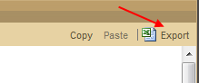
A dialog box appears. Choose where to save the file in your computer and click on "Save" button.
Deleting lines
To delete a line click on the generic heading (Group (SO), Group (ER),
Groupe (A), Group (P), or SO, ER, A, P). Then click on “Delete”:

Adding groups
To add groups, click on “Add a group” located at the bottom of the line. For example, for a Specific Objectives group:

The following dialog box appears:
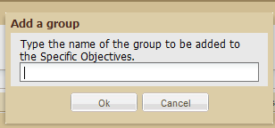
After typing in a name, click OK.
The group is now created and appears in the logical framework.

Renaming groups
To rename a group, click on the generic heading (Groupe (SO), Group
(ER), Group (A), Group (P)). This opens a list which includes a Rename
button:

Click on Rename to open the following dialog box:

Type the name of your choice then click OK. The new group name then appears in the logical framework.
Deleting groups
To delete a group, click on the generic heading (Groupe (SO), Group
(ER), Group (A), Group (P)). This opens a menu which includes a Delete
button:
Click on the Delete button to remove the group.
Edit activities
For activities, all actions previously described are possible (moving or deleting lines); however, some important elements, linked to activities, change during the project and has to be modifiable.
This is why you can:
In order to change an activity already created, click on the activity generic heading (A A.1.1 for example). Choose the « Edit » option.

The following dialog bow appears:

Change the element you want:
NB : By changing the progress bar of an activity, it will make the « Activity» progress bar of the « projects table » block in the Dashboard evolve.

N.B.: Don’t forget to click on "Save" before leaving the screen!
The “Manage indicators” sub-tab allows you to:
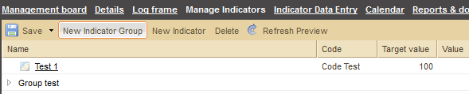
Defining indicators
To create an indicator, click on the “New Indicator” button. If you
have selected a line of a group of indicators in the table, the
indicator that you are going to create by clicking on “New indicator”
will automatically belong to this group (you will be able to move it
afterwards).
See "How do you create an indicator?" for more details about creating indicators.
To modify the definition of an indicator, click on the link with the indicator’s name.
To remove an indicator, click on the line of the indicator in the table (and not on the link) to select it, then click on “Delete”.
Creating and re-naming an Indicator Group
Indicator groups make it possible to organise the indicators for a project. (see the definition of an "Indicator group" above for more details).
To create an indicator group, click on the “New group” button. If you
have selected a line in a group of indicators in the table, the group
that you are going to create by clicking on “New group” will
automatically belong to this group (you will be able to move it
afterwards).
To rename a group of indicators, just double click on its name. Remember to click on “Save” once the group has been renamed.
Organising indicators and indicator groups
Indicators can be organised into groups. Each group can contain sub-groups, etc.
There are 3 ways to put an indicator into a group:

To put one indicator group into another, there are 2 possible solutions:
Specifying indicator measurement sites
Indicator data collection sites are specified using the “Sites” tab situated to the right of the screen.
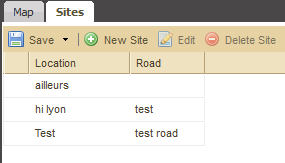
Visualising indicator collection sites
To visualise the collection sites of an indicator, click on the Map
icon to the left of the indicator’s name in the table. All the sites
where this indicator has been collected are then shown on the map.

To export all indicators in a spreadsheet file (Open Document Spreadsheet, or MS Excel), you just have to click on the "Export" button located on the top-right corner of the indicators table.
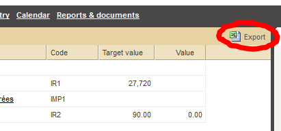
The Indicator Data Entry sub-tab allows you to do two things:
Using the table
The indicator data can be viewed in 3 different ways on this screen:
The choice of having the indicators in columns and the sites in lines,
or vice-versa, can be changed by clicking on the arrows button ( ) in the top left hand corner of the table.
) in the top left hand corner of the table.
To change the type of view being used, there are 3 possibilities:
1. The magnifying glass button ( )
next to each heading (Site, Indicator or Month) allows you to view the
data from the point of view of a particular site, indicator or month.
)
next to each heading (Site, Indicator or Month) allows you to view the
data from the point of view of a particular site, indicator or month.
For example, by clicking on the magnifying glass next to the indicator
heading “No. of NFI kits distributed”, the table changes to show the
data by indicator for the indicator “No. of NFI kits distributed”.
2. Filter drop-down lists: the table can be viewed
from a particular site, indicator or month by selecting one of these in
the 3 filter drop-down lists located at the top of the table – “Site”,
“Indicator” and “Indicator values for”.
3. Previous view ( )and next view (
)and next view ( )buttons: these allow you to go through the different views which have already been chosen.
)buttons: these allow you to go through the different views which have already been chosen.
The “Default view” is the view which is loaded when the “Indicator Data Entry” sub-tab is opened.
To choose a particular view as the default view when opening the
“Indicator Data Entry” sub-tab, click on the “Default view” box.
De-select the view by clicking on the box again
Entering indicator data
To enter indicator data:
Consulting or modifying the definition of indicators
To consult or modify the definition of an indicator, click on the pencil button ( ) next to the name of the indicator in the table. This opens the indicator’s card (see "Defining indicators" for more details).
) next to the name of the indicator in the table. This opens the indicator’s card (see "Defining indicators" for more details).
The "Map" sub-tab allows you to:

Setting the location of the project
Setting indicator collection sites
View indicator collection sites
The right-hand section of the Map sub-tab allows you to view the indicator collection sites and the location of the project.
The Calendar page is divided into two parts:
1. On the left is the “Types of Entry” list which can be hidden to increase the size of the calendar (see "Framed double arrows" for more details). You can also choose to display or hide different entries selecting or de-selecting them in the “Types of entry” list.
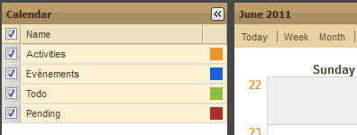
2. On the right is the calendar which can be presented in three different formats: Today, Week and Month.
The calendar’s default format is the current month. The date of each day is written in dark grey. The weeks of the year are numbered to the left of each line in orange. The “Previous” and “Next” buttons allow you to go to the previous or the following month or week, depending on the selected format. It is also possible to add an event by clicking on the “Add Event” button.

This opens the following dialog box:

Fill in the different fields then click OK. The event then appears in the Calendar.
The activities indicated in the logical framework are also displayed in the Calendar.
The “Reports and Documents” page is used for two purposes:
N. B.: The following icons are used to distinguish the reports and documents in the table:
 reports
reports documents
documentsCreating a report
To create a new report, click on “New Report” on the left hand side of the screen:

This opens a list of different reports available for this project, organised by phase:

Click on a phase to select it. This opens a dialog box. Enter the title then click on OK to confirm.
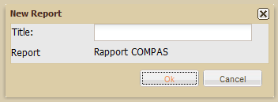
Following this:
1. A confirmation message appears in the bottom right hand corner of the screen.
2. In the right hand part of the screen, the structure of your report
appears in keeping with the model chosen during the parameterization.

Opening an existing report
Click on the title of a report in the left hand section to display its contents in the right hand section:

The contents of the selected report are displayed, with the title at the top:

Showing reports in Overview Mode and Full Mode
The default position for reports is “Full Mode” with all questions (model sections) and answers displayed. The size of the report’s sections and sub-sections can be altered by clicking on the – button to hide an answer and the + button to expand it again.

It is also possible to display reports in overview mode which automatically displays the report in its most condensed form, with all of the answers hidden, leaving only section titles and questions visible.
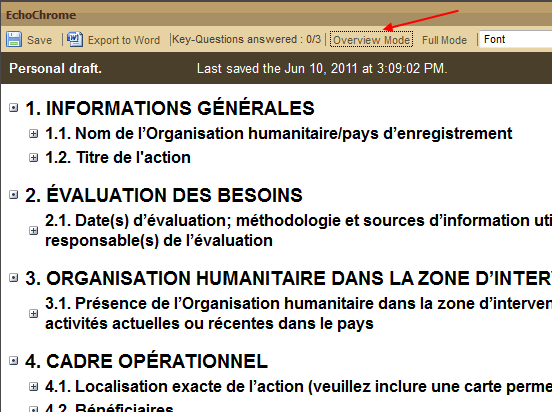
Export a report
To export a report, select the report of your choice in the left hand table, Reports and Documents, then click the button Export Word situated under the title of the right hand table, which now has the name of the selected report.

This opens your computer’s file-saving dialog box:

Once you have selected a folder, click on Save. Once it has been downloaded, the file is available in .rtf format.
Attaching a file
To attach a document click on “Attach file”.

A menu drops down with all the types of document which can be attached to this project:

Select a type of document by clicking on its heading. This opens a dialog box.

Click on “Add file”. This opens your computer’s file selection dialog box:

Select the file of your choice then click on “Open”.
This opens a dialog box asking you whether you want to add a monitored point to the file:

Click “Yes” to confirm and “No” to cancel it.
If you click Yes, this opens a new dialog box related to creating the monitored point.
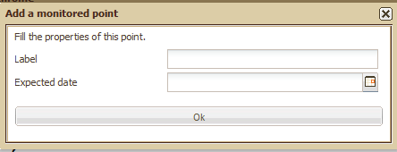
Finally, your attached document is displayed in the Reports and Documents table, with the following information:
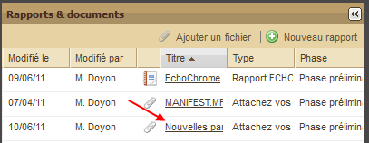
Opening a document
To open a document, just click on the title.
This part of the guide aims to answer common questions about using Sigmah.
Sigmah allows you to export the following data:
"Global export" from the Dashboard "Projects table"
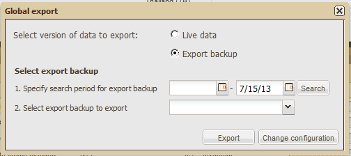
Change configuration
From the "Global export" dialog box, you can click on the "Change configuration" button to change the configuration of the Global export. The "Global export configuration" dialog box allows you to:

Exporting the "Management board" and "Details" pages
Export data from the logical framework
To export the logical framework, you can either export it with the Project synthesis as presented above, or export it alone as presented in 4.3.3. Logical framework.
Export data related to the indicators
To export all the content related to the indicators, you can either export it with the Project synthesis as presented above, or export it alone as presented in 4.3.4. Manage indicators.
There are two ways of creating a new project with Sigmah. Your choice of whether to use one or the other will depend mostly on the links between the new project and other projects, but also on personal working methods. See:
To delete a project, click on the "Delete this sproject" button located at the end of the tab list related to a "project" page (Management board, Details, Log frame, Manage Indicators, Indicator Data Entry, Calendar, Reports & documents).
This opens a dialog box to confirm the deletion.
Warning: The "Delete this project" button only appears if your user's profile allows you to delete a project (see 6.2.6. How do you edit a profile?)
The first way of creating a project is with the Dashboard. To do this, click on “New project” in the “Menu” in the bottom left hand corner of the screen.

This opens a dialog box:

When you have filled in the relevant information, click on “Create”. A confirmation message appears in the bottom right hand corner of the screen.
A new project can be created on a Project page via the “Related
projects” section at the bottom of the screen. This section is divided
into two columns: “Sources of funding” and “Funded projects”.
Click on the “Create” button in the relevant column:
“Sources of funding”:

Or “Funded projects”:

This opens a dialog box:
Sources of funding:

Funded project:

Once you have completed the box, click on “Create”. A confirmation
message appears in the bottom right hand corner of the screen.
If you have been authorised to do so by your organisation's administrator, you can change your User account password.
To change your password, place the cursor over the email address for your account.

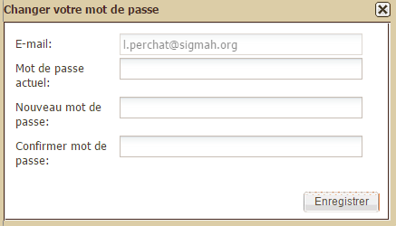
If you know that the place you are going to does not have an adequate internet connection, you can prepare your offline environment in Sigmah (see Offline mode, offline bases and bookmarked projects ).
"Offline environment" means the data and files that you want to be able to consult or modify at any time, even without an internet connection.
There are two offline bases:
Preparing your offline environment therefore consists of updating these two offline bases for data and files.
Updating your offline data base
There are three ways to update your offline data base:


A progress bar appears when your offline data base is being updated: 
Updating your offline file base
There are two ways to update your offline file base:


The "Prepare the transfer of offline files" dialogue box is used as follows:
Once an internet connection is available again, a notification message
informs you that a connection has been detected, and the internet
connection icon changes from to .
You can now reconnect to your Sigmah server and synchronise your data in order to (i) put online the work you have done offline, and (ii) receive the work that your colleagues have done when you were offline.
To reconnect, open the offline management menu (by move the cursor over the connection) and click on "Connect & Synchronise".
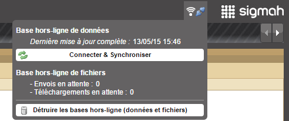
The following window shows the rate of progress of the synchronisation.

Once the offline data base has been synchronised, Sigmah returns to online mode (reconnected, and the orange background is re-established at the top left-hand corner of the screen), and a dialogue box then asks you if you want to synchronise the offline file base. Click on "Yes" to synchronise it.

When you click on yes, a progress bar appears under the offline mode icon:

You can destroy your offline environment at any time for security reasons, in order to make sure you do not leave any information on a computer which has used Sigmah.
By destroying your offline environment, you destroy both your offline data and file bases.
To destroy your offline environment, simply click on the button "Destroy offline bases (data and files)" in the offline management menu.

In order to avoid entering data twice, you can import files in OpenDocument Spreadsheet, MS Excel and CSV formats.
In order to import data, Importation Frameworks need to have been created in the Administration section. For more information, go to Managing Importation Frameworks .
To import preformated files, click on the Import button on the Dashboard Menu

This opens the following dialogue box. Select the relevant importation framework, and the file to be imported, then click on "Import".
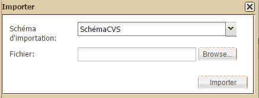
This opens a second dialogue box where you can select the projects and the organisational units that will be modified by this importation. Check the relevant projects and/or organisational units, then click on "Import".
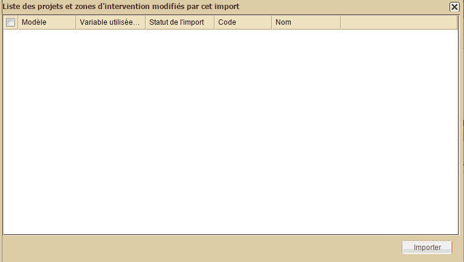
To complete a phase, it is necessary to:
For more information about changing phase, see the "Phases table".
N. B. : What is described below is the expected final behaviour of the project amendment system. This has not yet been developed at the time of writing, but it will be very soon. The new behaviour to be developed is described in issue 0000167: Revise Amendments system behavior. The behaviour of the software at the time of writing is not very different from the final behaviour described below.
Making an amendment is a way of creating a new version of a project. In Sigmah, this process involves several actions for each version:
Project versions can be locked and unlocked. Locking a version is
useful in that it makes sure everyone knows what the final state of a
version is before proposing a new version to be validated.
When a version is finished being modified and is due to be proposed for
validation, click on the link “Lock this amendment” to lock it:

When you have done this, the Amendments box will look like this:
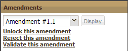
To unlock a locked version, click on “Unlock this amendment” to return to the initial state.
Once the Project core is locked, it is possible to save this Project core status by validating the creation of a new Project core version.
Only users who have the relevant authorisation in their user profile can validate a new Project core version.
To validate a Project core version, click on “Validate version”.

This opens a window where you are asked to give your new version a title. Enter the title, then click on "Create version".

The new version is added to the drop-down list in the Project core management section.
To compare two versions, click on the drop-down arrow in the Project core block.
The list of existing versions appears. Click on "Compare versions":

This opens the following window which asks you to choose the versions you want to compare. The differences between the two versions are then shown:
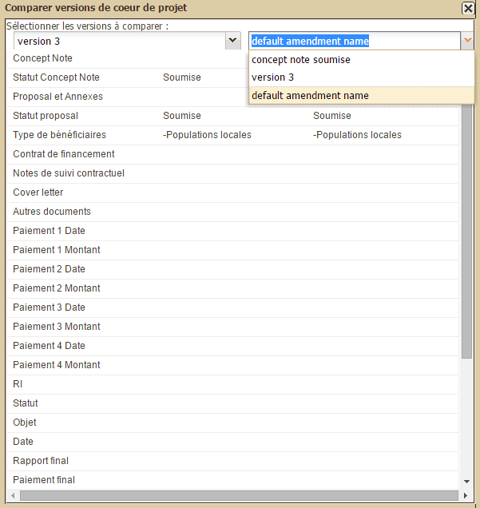
To rename the title of a Project core version, open the dropdown menu of the Project core management block, and click on "Rename versions".

This opens the following dialogue box:

Modify the name of the version then click on "Save".
When several Project core versions have been created, it is possible to display the project as it was when these Project core versions were validated.
To display an old Project core version, open the drop-down list in the Project core management section:
The lower part of the drop-down list entitled "Display version" allows the project to be displayed in one of the Core project versions listed.
Select the Project core version that you want to display and the project page is reloaded to display the project as it was at the time.
Returning to the working version from a past version of the project
When a past version of the Project core is displayed, the Project core management block shows a single button "Back to working version" instead of the two buttons, "Lock project core" and "Validate version".

To close the old version of the Project core and come back to the working version, click on "Back to working version".
In order to avoid having to write out a logical framework which is
similar to a previous one, you can copy and paste the previous one.
To do this, open the logical framework page of the project you want to
copy and click on the “Copy” button in the top right hand corner:

This opens a box in the bottom right hand corner of the screen to confirm that the logical framework has been copied.
Next, go to the Logical Framework page of the project you are designing by clicking on “Paste”:

A dialog box appears which asks you to :
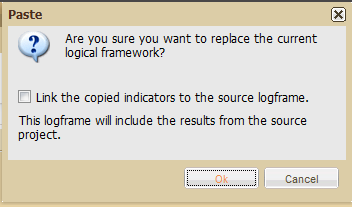
If you click Yes, a confirmation message appears in the bottom right hand corner of the screen.
Attaching a new version
To add a new version of a document which is already attached, click on the "New version" button.
The difference between attaching a new file and attaching a new version
In Sigmah, a file attachment field can be set up to recieve a limited or unlimited number of documents. However, it is always possible to add as many versions as you want of a document as long as the file attachment field is not locked (for example, when the phase is closed).
For example, in the following screen, the number of files which can be attached to the "Initial Assessment Report" field has been limited to 1 during the parameterisation. This limit is indicated by "1 document(s) max." next to the title.

The "Add a file" button makes it possible to add a new file to the file field. Thus, you could allow an unlimited number of image files to be added to a field entitled "Photos". If the limit of the authorised number is reached, the "Add a file" button is de-activated as in the screen above.
The "New version" button allows a new version to be added which then replaces the file version already attached. Previous versions of the file can still be viewed by clicking on "History".
See Reports & documents.
Indicators are created via the “Manage indicators” sub-tab on a project page by clicking on the “New Indicator” button.
This opens the “New Indicator” dialog box:

Whether for quantitative or qualitative indicators, the sections to be filled in are as follows:
If the indicator is "Quantitative", the following sections are added:
If the indicator is qualitative, the following sections are added:

To create an indicator collection site:
The indicator collection site is now created.
There are three options, depending on the seriousness of the problem:
1. First of all, if a piece of information which you have just entered
and saved does not appear on your screen, check that you have updated
your navigator (short cut: F5 on your keyboard)
2. If the problem persists, you can notify the Sigmah developers by
clicking on the link Report a bug in the top right hand corner of any
open page of the software.

3. Finally, you can consult the “Technical support” and “Feedback & suggestions” forums at www.sigmah.org.
Access to the administration zone is restricted to users who have the right to parameterize the software. It is accessed by clicking on the Administration button situated in the bottom left hand corner in the Menu section.

The administration zone allows you to create or modify:
For more information about the “model” concept, see the "Models" section.
User
A “user” is an individual who is authorised to use Sigmah as part of an
organisation’s use of the software. This means that their project team
(or the organisation’s Sigmah focal point, depending on the
institutional set up) has given them a certain number of rights with
regard to using Sigmah which are decided during the parameterization of
the software and which the user in question may or may not be able to
modify (see Profiles below).
In the “Users” table, accessed via the “Users” sub-tab on the
“Administration” screen, there are 9 pieces of information about each
user :
1. Surname
2. First name
3. Status: a user account can be
4. E-mail
5. Invitation language: English or French
6. Organisational unit
7. Password change key
8. Last password change
9. Profiles: see below
Profile
A profile is all a user’s rights depending on the types of
authorization that they have and the privacy groups (see below) they
belong to.
These authorizations (called "Global permissions" in the software) are as follows:
Privacy group
A privacy group is a number of sections which have the same type of
privacy. For example, a “Security” privacy group might include all the
sections with security-related information or an HR privacy group might
include all the information related to the monitoring and evaluation of
human resources, etc.
When a section is included in a privacy group, by default it can no longer be viewed by all users.
But these privacy groups can then be associated to users via the link
created between these groups and profiles, to allow access to sections
which belong to privacy groups. Two levels of authorization exist
between profiles and privacy groups:
If a user has several profiles, only the strongest authorization level is maintained for each privacy group.
Each project model field has the following 9 characteristics:

In relation to “Project” and “Organizational unit” models, a "type" is the format in which information should be entered in the field being created (see "How do you edit a project model which has just been created?" for more information). The format is chosen from a drop-down list which appears when you click on the arrow on the right hand side of the line.

The different possible field types are:
In addition, certain types require supplementary information to be entered in the same dialog box.
Supplementary information for “Files list”
“Max limit” refers to the maximum number of files allowed in the list.

Supplementary information for "Choice list"
Three extra pieces of information are requested for "Choice list":
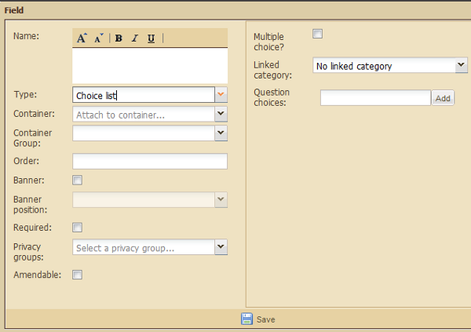
To create a “Personalised choice”, write its name in the field then click “Add”:

The new Personalised choice then appears under the text field.
To delete a choice, click on the cross on the left.
Supplementary information for “Report” and “Report list”
For “Report” or “Report list”, the only supplementary information is:
For more information, see "The Report concept" and "Managing report models".
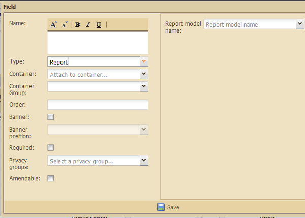

Supplementary information for “Text field”

A "Test project" is a project which is created using a "Draft" project model.
It allows you to clearly visualise what a project created using a "Draft" project model will be like, before making it "Available".
As long as it is not linked to an operational unit, the "Test project" is only visible to its creator.
To create a Test project:


The Users page is split into 3 sections:
For more information about these three notions, see "Users, Profiles and Privacy groups".
The Users section allows 4 types of action:
The “Profiles” section allows 3 actions to be carried out:
The “Privacy groups administration” section allows 3 actions to be carried out:
N.B. : The contents of the “Users” and “Profiles” sections can be
refreshed as modifications are made by simply clicking on the “Refresh”
button.
New users can be added in the “Users” section (one at a time). To do
this, click on the “Add User” button located below the section heading.

This opens a dialog box headed “New user”:
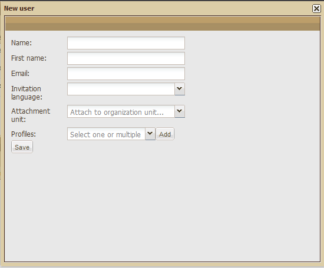
Fill in the following information:
Users accounts can be disabled (or enabled) in the Users section (one
at a time). To do this, click on the button, “Enable/disable” located
below the section heading next to the “Add user” button.
If there are several users in the table, select the line of the user you want to modify then click on “Enable/disable” :

If the status displayed in the Users table was “Active”, this will now change to “Blocked”:

To re-activate a user’s account, click again on Disable/enable.
In the Users section, you can search for a particular user. To do this, enter their name in the box adjacent to “Search user by name”.

A user account can be modified in the Users section. To do this, click on the “Edit” button at the end of the line concerned.

This opens a dialog box presenting the specific information associated with this user:

Carry out the modifications you want then click on “Save”. A confirmation message appears in the bottom right hand corner of the screen.
New users profiles can be created in the “Profiles” section. To do this, click on the “Add profile” button below the section heading.

This opens a dialog box in which you can enter a profile name, select
different types of authorisation and select privacy groups:

Click on “Save” in the bottom left hand corner to save the information entered. A confirmation message appears in the bottom right hand corner of the screen.
To modify a user profile, click on the “Edit” button at the end of the line concerned.

A dialog box opens which allows you to modify the selected profile:
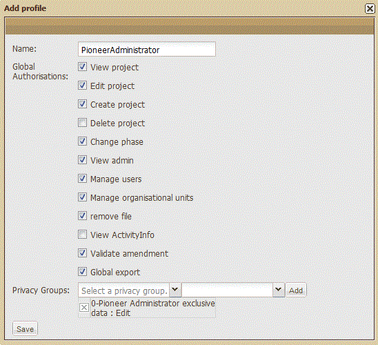
When you have saved the changes, a confirmation message appears in the bottom right hand corner of the screen.
To create a privacy group, click on the “Add” button under the section heading.

This opens a dialog box with the following information to enter:

Once this information has been entered, click on “Save”. A confirmation message then appears in the bottom right hand corner of the screen.
To modify a privacy group, click on the Edit button at the end of the line concerned.

This opens the following dialog box:

Once the modifications have been made, click on Save. A confirmation
message then appears in the bottom right hand corner of the screen.
Another dialog box opens in order to refresh the “Privacy groups”
column in the “Profiles” section which is also affected by the changes
which have been made:

Click “yes”.
The "Managing organisational units" page is made up of a single block. It allows you to create organisational units using organisational unit models as well as modify and delete those which have already been created. (For more information about organisational unit models, go to "Organisational units").

The organisational unit table has 5 buttons situated below the table heading:
N. B.: For more information about the “Expand all” and “Collapse all” buttons go to the “Expand/Collapse all organisational units” section in the Organisational units table (For better navigation within folders, see the “Opening/closing a folder with sub-folders” section on the same page.)
It is also made up of 5 columns:
Creating an organisational unit
To add an organisational unit, select the line in which you want to create the new unit then click the “Add” button.

A dialog box then appears:

Fill in the required fields then click on “Create”.

The new unit is created and appears in the automatically updated table.

Move an organisational unit
To move an organisational unit, select the line of the unit you want to move then click on “Move”.

A dialog box then appears:

Select the new position of the organisational unit in the drop-down menu then click on Move.
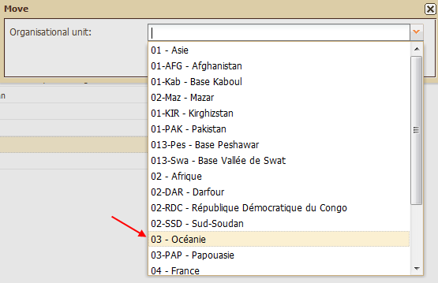
The moved unit appears in the automatically updated table.

Deleting an organisational unit
To delete an organisational unit, select the line of the unit you want to delete then click on “Delete”.

A dialog box then appears:
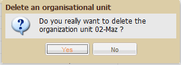
To confirm the deletion click on Yes, to cancel it click on No. If you confirm the deletion, the table is automatically updated.
The Project models page is made up of a single section and can be used to create and modify project models.
For more information about the model concept, see "Model concept".
For more information about the project concept, see "Project concept".
To create a project model, click on the Add button located below the Administration tab.

This opens a dialog box :

Give the project model a name then select a type of project model from the three possibilities (NGO project, Funding project, Local partner partner) by clicking on the circle between the icon and the title. Then click on “Save”. A confirmation message appears.
Your project model is then added to the list of models which already exist.
Once your project model has been created, you have to edit it, that is, give it specific characteristics. To do this, click on the project model concerned. It appears in the list of existing models. By default, its status is that of a Draft (as opposed to a Used model).

The administration page then changes screen without opening a new tab:

This editing page has two sections:
This section allows 4 pieces of information related to the model to be modified:
To save any changes that are made, you must then click on “Save”.
NB: This "Save" button is only used to save changes made to the upper section of the screen. For the lower section, all changes are saved due to the action buttons or in the dialog boxes.
This section is made up of the following 4 tabs:
The “All fields” tab includes a tool bar and a table:
Default fields
Just after the creation of a new project model, the table is
automatically filled with the following 9 fields (in nine different
lines) :
Amongst the 11 characteristics (columns) in the editing table, the
second, Type, is already completed with the information "Element by
default". This parameterization, which can not be changed under any
circumstances, means that this field will be present with its
corresponding heading (Code, Title, Country, etc.) in all the projects
created regardless of their model and their type of project (NGO,
Funding or Local partner).
How do you edit a project model’s default fields?
To parameterize each default field, click on its name. This opens a specific dialog box for each field.
For example, for Code:

For each dialog box, once the information has been entered, click on “Save” at the bottom of the box. A confirmation message then appears.
Another type of information is directly accessible from the editing table - "Group", in the second last column. When you click on its name, the following dialog box appears:

Fill in the different fields (Name, Container, Vertical position) then “Save”. A confirmation message is subsequently shown on the screen.
How do you edit a field within a project model?
The characteristics presented below apply to each of the columns of the editing table. (See "How do you edit a project model which has just been created? Definitions of model field types"):
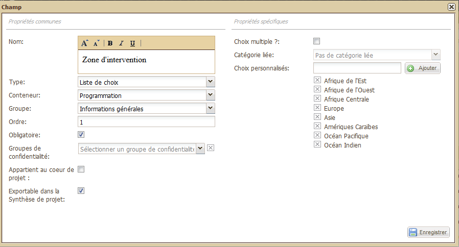
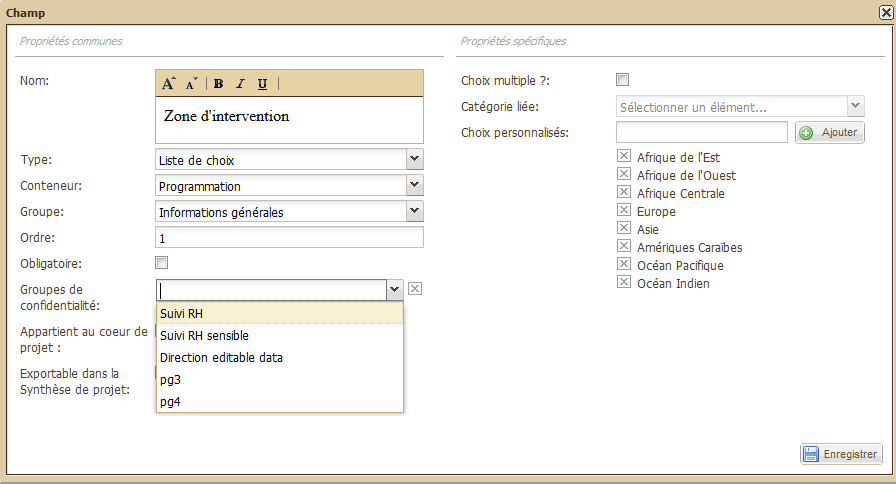
N.B. : Saving the information that has been entered
When you have finished entering information, do not forget to click on "Save". A confirmation message then appears.
If you have not filled in all the fields in the form, an error message appears:

For more information about the 11 characteristics of a field, see "Project model fields" and "Definitions of model field types".
How do you create a “Field group” within a project model?
Click on “ Add group” below the tab “All fields” next to “Add”. This opens a dialog box:

Fill in the following fields:
A confirmation message is shown.
How do you remove a field?
To remove a field:
By default, the “Phases” tab includes:

How do you modify a phase which is part of a project model?
At the end of each line (in the fifth column) is an “Edit” button.
Click on this to update the corresponding phase. This opens the
following dialog box:

Fill in the following fields:

How do you create a new phase within a project model?
Click on the “Add” button below the Phases tab. This opens the following dialog box:

For more information about filling in the fields in this dialog box, go to "How do you modify a phase which is part of a project model?".
The “Log Frame” tab includes:
Each of these sections is made up of several fields.
Use the scrollbar on the right hand side of the screen to view the lower sections:
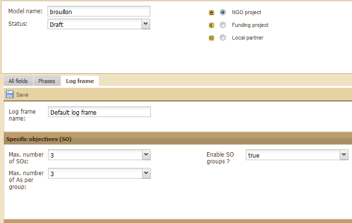
N. B.: All the information entered in this page will be seen by the
final user in the Log Frame sub-tab of a project regardless of its
model or type.
How do you edit the logical framework model of a project model?
First, you can modify the default name of the logical framework “Default log frame”. To do this, delete the default name and enter the name of your choice. A confirmation message then appears.
Similarly, default proposals are made for each of the fields of the 4 sections on the basis of the most common format for a logical framework (a table with 4 columns – which cannot be modified here – with a maximum number of lines and groups – the default setting being 3 here for each section, unless specified otherwise below).
Here is the list of elements which can be modified by section:
1. Specific Objectives (SO) :
2. Activities (A) :
3. Expected results (ER) :
4. Prerequisite (P) :
The "Importation frameworks" tab allows you to link importation frameworks with your project model. To find out more about importation frameworks, see Managing importation frameworks.
A link between an importation framework and a project model is a series of rules connecting project model fields and variables extracted from the importation framework.
Linking an importation framework and a project model
To link an importation framework and a project model, click on "Add" on the left-hand side of the "Importation frameworks" tab.

Select the importation framework you want from the list of all the importation frameworks that have been created, then click on "Save". The name of the importation framework is then added to the list on the left, and the following window then asks you to define your identification rule:

The identification rule is the rule which connects a project field and a variable extracted from the importation framework and which allows the extracted project to be identified with a project derived from the project model.
To define the identification rule, select a field and a variable, then click on "Save".
Your rule then appears on the right-hand side of the "Importation frameworks" tab. Identification rules are distinguished by the key icon which precedes their Field name.
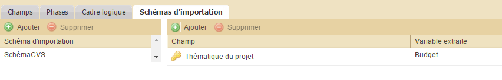
Add a connection rule
To add new connection rules, click on the "Add" button on the right-hand side of the screen. This opens the following dialogue box:
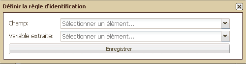
To finish defining the connection rule, select a field and a variable then click on "Save".
Remove a connection rule
To remove a connection rule, click on a rule to select it on the right-hand side of the screen, then click on "Remove" on the right-hand side of the screen.
Remove a link with an importation framework
To remove a link with an importation framework, click on the corresponding importation framework to select it on the left-hand side of the screen, then click on "Remove" on the left-hand side of the screen.
Click on "Import" located at the top-left of the table. This opens a dialog box. Click on "Browse" :

This opens your computer’s file selection dialog box. Select a file (.dat) and click on "Ouvrir" :

The selected file appears in the previous dialog box. Then select a project model type by using the drop-down list and click on "Ok".

The project model is imported and is automatically displaced in the updated list.
To modify a project which has "Available and Used" status, Sigmah has a "maintenance" mode for your project models. During a "maintenance" period, you are temporarily able to make a number of changes, such as adding or de-activating fields. While a project model is being maintained, it is not possible to modify the content of the projects which are derived from it.
Programming a maintenance period for a project model
Defining a maintenance period in advance means that users are informed that their project will temporarily not be able to be modified as of the date and time indicated. It is nevertheless possible to programme a maintenance period so that it begins immediately by choosing a starting date/time which is earlier than the present time.
To programme a maintenance period, go to the Administration section and click on Project models on the left. Next, select the relevant project. This opens a block on the right for this project. Check "Maintenance" (3rd line).

Two fields then appear on the right to define the day and time when the maintenance period begins. Choose the day and time that suit you and click on "Save" at the bottom on the right.

A message then appears informing you that your update has been successful.
Modifying a project model in maintenance mode
Once the maintenance period for a project model has begun, its "Fields" tab makes new actions available such as "Activate the selected fields" and "De-activate the selected fields".

This is the full list of actions that you are authorised to carry out on a project model in maintenance mode:
Stop the project model maintenance period
To stop a project model maintenance period, just uncheck "Maintenance" in the top half of the project model, then click on "Save".
Click on "Delete" located at the right of the selected model. Then appears un dialog box:

Click on "Yes". The project model is deleted and the list automatically updated.
Click on "Export" located on the right line of the selected project. Then appears a dialog box. Click on Ok.

This opens your computer’s file selection dialog box:

Click on "Enregistrer".
Click on "Duplicate" located at the right of the model you want to duplicate.
A confirmation message appears in the bottom right hand corner of the screen. The duplicated model appeears at the end of the project model list which is automatically updated.
The Organizational unit models page is made up of a single section
which allows organizational unit models to be created and modified.
For more information about the “model” concept, go to "The model concept".
For more information about the “organizational unit” concept, go to "The organizational unit concept".
The management of organizational unit models works in a similar way to the management of project models. See 6.4 Managing project models to edit, modify, import, delete, export or copy an organizational unit model.
To create a report model, enter its name in the empty box located just above the column "Report model name" and click on the "Add" button. A confirmation message will then be displayed on the screen. The new model automatically appears in the list.

This opens a dialog box:
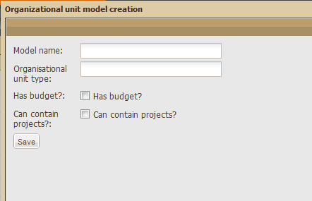
Fill in the following fields:
For example: if the type of unit for the model is “Mission” and a unit created using this model is called “Haiti”, final users will see “Haiti Mission” on their screens.
Finally, click on the “Save” button in the bottom left hand corner. A confirmation message will then be displayed on the screen.
The Reports page has two sections. On the left is the list of Report
models organized by name and on the right are the details of the plan of
the report selected in the left hand section (by simply clicking on the
report model you want to deal with).

For more information about the “model” concept, go to "The “model” concept".
For more information about the “report” concept, go to "The “report” concept".
To create a new report model :
A confirmation message then appears. The new model is created and appears in the automatically updated table.
To create a new report section, click on the “Add” button in the right hand section.

A new line appears in the “Section name” column: “Click on each field to edit”. Click on the new line to rename it:

Click on the number 0 located in the Order column to choose the place
of this new section in relation to the others. Enter a number of your
choice then press enter on your keyboard to save your choice.
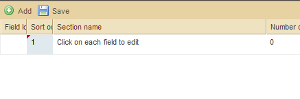
Now click on the number 0 in the “Number of text areas” column to
choose the number of paragraphs this new section will have. Write the
number of your choice then press Enter on your keyboard to save it.

To create a link between this new section and a parent section, click on the same line in the “Parent section id” column. A cell with a drop-down list appears.
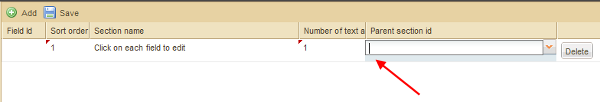
Click on the down arrow to open the drop-down list:

Select the appropriate section then press Enter on your keyboard to save it.

The “Categories” page has two sections:
This page allows 5 actions :
For more information about "categories" and "labels", go to « Category ».
Creating a category
To create a new category:

A confirmation message then appears. The new category is created and appears in the automatically updated table.
Deleting a category
To delete a category:

A confirmation message then appears. The category table is automatically updated.
Exporting a category
To export a category, click on the « Export » button:
A dialog box then appears:
Click on "Ok".
Importing a category
To import a category, click on the « Import » button:

A dialog box then appears. Click on “Browse”:

This opens your computer’s file selection dialog box. Select the file of your choice and click on "Ouvrir" (Open) :

Then the selected file appears in the previous dialog box :

A confirmation message will then be displayed on the screen. The category table is automatically updated.
Creating category labels
To create labels within a new category :

A confirmation message will then be displayed on the screen. The label table automatically is automatically updated.
Deleting category labels
To delete labels within a category:

A confirmation message then appears. The label table automatically is automatically updated.
An importation framework describes the format and manner in which information to be imported from a file mode is to be extracted. If you use preformated fileds in OpenDocument Spreadsheet, MS Excel, or CSV formats, importation frameworks allow you to import data from these files directly into Sigmah without having to enter the data a second time.
Importation frameworks are configured on the "Importation Frameworks" screen in the Administration section. You can:
The "Importation Frameworks" screen is split into 2 sections:
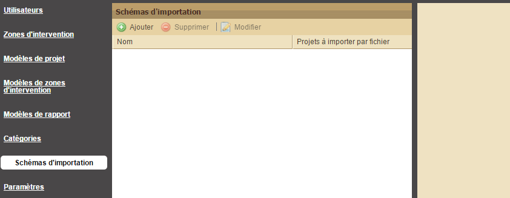
Creating an importation framework
To create an importation framework, click on the "Add" button. This opens the following dialogue box:

Enter the following information which covers the main characteristics of an importation framework:
The importation framework which is created appears on the left-hand side of the screeen.
Modify the main characteristics of an importation framework
To modify the main characteristics of an importation framework, select the line of a framework on the left-hand side of the screen and then click on "Modify".
Configure an importation framework
To configure an importation framework, click on its name on the left-hand side of the screen and it then opens on the righ-hand side.
Depending on the choices made for "Projects to be imported by file" and "File format" for the importation framework which is opened, the right-hand side of the screen will look different:
To add variables to extract from the importation framework, click on "Add" on the left-hand side of the screen. This opens a dialogue box to define the new variable.

Enter the reference of the information to be extracted in the format requested ("Column", "Cell", or "Sheet: Cell") and a name, then click on Save.
Next step: Linking an importation framework and project models
Once an importation framework has been created and defined, you must then configure its links with the project models which will use the information which is extracted. To learn how to configure these links, see the "importation framework" tab on the project model management screen.
The « Settings » page has three sections:
This page allows 4 actions:
Create or modify the organisation's name
To create or modify the organisation's name, fill in the "organisation's name" field and then click on the "Save" button.
Add or modify the organisation's logo
To add or modify the organisation's logo, click on the "Browse" button. Select a file and then click on the "Save" button (the selected logo will then automatically appear below).
Set up the files' backup
To select the type of backup files' versions, click on "All the versions of each file" or "Only the last version of each file".
To select where your backup will be added, click on the drop-down list located just next the "Root organisational unit to build the backup from" field, select a zone and then click on the "Backup all files" button.
Select the export file format
Select a file format by clicking on « Open document spreadsheet » or « MS Excel » and then click on the "Save" button.